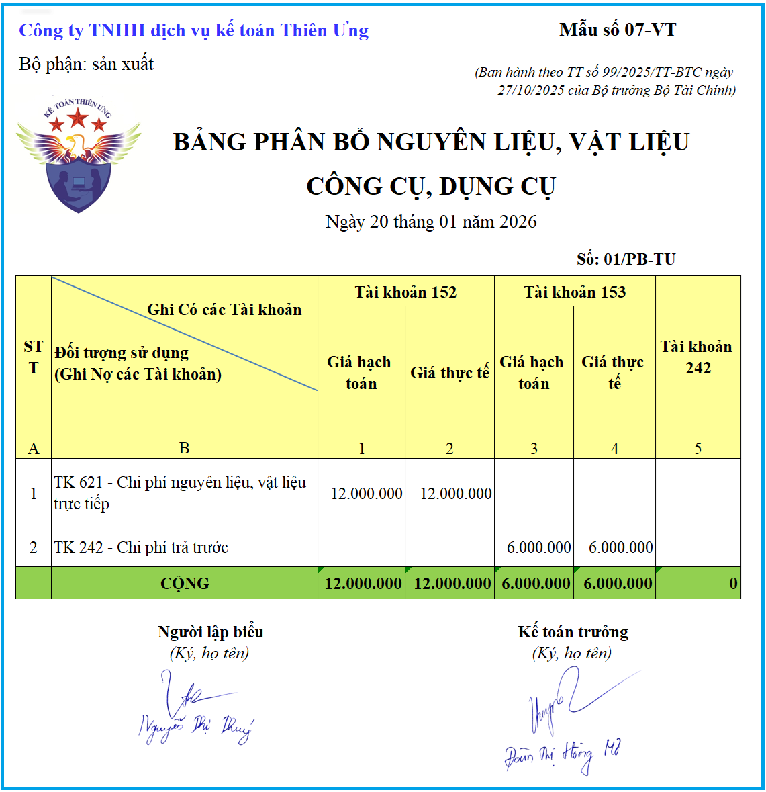

Mẫu bảng phân bổ nguyên liệu, vật liệu, công cụ, dụng cụ mới nhất năm 2026 là Mẫu số: 07 - VT được ban hành kèm theo Thông tư số 99/2025/TT-BTC (Thay thế mẫu 07 - VT theo Thông tư 200)
Bảng phân bổ nguyên liệu, vật liệu, công cụ, dụng cụ dùng để phản ánh tổng giá trị nguyên liệu, vật liệu, công cụ, dụng cụ xuất kho trong tháng theo giá thực tế và giá hạch toán và phân bổ giá trị nguyên liệu, vật liệu, công cụ, dụng cụ xuất dùng cho các đối tượng sử dụng hàng tháng (ghi Có TK 152, TK 153, Nợ các tài khoản liên quan), Bảng này còn dùng để phân bổ giá trị công cụ, dụng cụ xuất dùng một lần có giá trị lớn, thời gian sử dụng dưới một năm hoặc trên một năm đang được phản ánh trên TK 242.
1. Mẫu bảng phân bổ nguyên liệu, vật liệu, công cụ, dụng cụ theo thông tư 99
BẢNG PHÂN BỔ NGUYÊN LIỆU, VẬT LIỆU CÔNG CỤ, DỤNG CỤ
Tháng 09 năm 2026
Số: …………
|
|||||||||||||||||||||||||||||||||||||||||||||||||||||
Ghi chú: Tùy theo đặc điểm hoạt động sản xuất kinh doanh và yêu cầu quản lý của đơn vị mình, doanh nghiệp được xây dựng, thiết kế biểu mẫu chứng từ kế toán
2. Mẫu bảng phân bổ nguyên liệu, vật liệu, công cụ, dụng cụ trên Excel

3. Cách lập bảng phân bổ nguyên liệu, vật liệu, công cụ, dụng cụ theo Thông tư 99/2025/TT-BTC
- Bảng gồm các cột dọc phản ánh các loại nguyên liệu, vật liệu và công cụ, dụng cụ xuất dùng trong tháng tính theo giá hạch toán và giá thực tế, các dòng ngang phản ánh các đối tượng sử dụng nguyên liệu, vật liệu công cụ, dụng cụ.
- Căn cứ vào các chứng từ xuất kho vật liệu và hệ số chênh lệch giữa giá hạch toán và giá thực tế của từng loại vật liệu để tính giá thực tế nguyên liệu, vật liệu, công cụ xuất kho.
Giá trị nguyên liệu, vật liệu, công cụ, dụng cụ xuất kho trong tháng theo giá thực tế phản ánh trong Bảng phân bổ nguyên liệu, vật liệu, công cụ, dụng cụ theo từng đối tượng sử dụng được dùng làm căn cứ để ghi vào bên Có các Tài khoản 152, 153, 242 của các Bảng kê, Nhật ký - Chứng từ và sổ kế toán liên quan tùy theo hình thức kế toán đơn vị áp dụng (Sổ Cái hoặc Nhật ký - Sổ Cái TK 152, 153,...). Số liệu của Bảng phân bổ này đồng thời dược sử dụng để tập hợp chi phí tính giá thành sản phẩm, dịch vụ.
--------------------------------------------
Các bạn muốn tải (download) Mẫu bảng phân bổ nguyên vật liệu, công cụ dụng cụ bằng file Word hoặc trên file Excel theo Thông tư 99/2025/TT-BTC về để tham khảo và sử dụng thì có thể gửi mail về địa chỉ mail: ketoandieutam@gmail.com => Kế Toán Diệu Tâm sẽ gửi lại Mẫu bảng phân bổ nguyên vật liệu, công cụ dụng cụ theo Thông tư 99/2025/TT-BTC bằng file Word hoặc file Excel này cho các bạn
--------------------------------------------